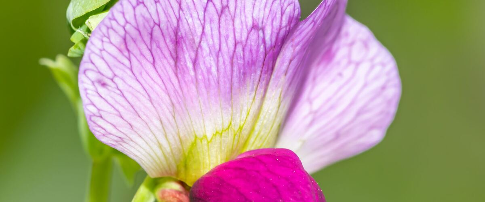

When to plant sweet peas in Chelan, WA
Plant sweet peas from seed, directly in the garden in Chelan, Mar 20 – Apr 24.
- Difficulty
- Moderate
- Sun
- Full sun
- Spacing
- 4 to 6 inches apart along a trellis
- Planting depth
- 1 inch deep (soak seeds overnight first)
- Frost
- Handles light frost
- Flowers
- Blooms in early summer
Why these dates
Chelan's typical last spring frost is April 17. As a cool-season crop that handles light frost, this crop doesn't need to wait for that date. In the Columbia Basin and low eastern valleys, though, the soil usually isn't ready to work until about March 20.
Columbia Basin and low eastern valleys. Hot, dry summers and quick spring warm-up. Warm crops go in earlier than west of the Cascades, and irrigation matters more than rain.
How to grow sweet peas in Chelan
- Prepare the bed: loosen the soil and mix in an inch or two of compost.
- Plant seeds Mar 20 – Apr 24, 1 inch deep (soak seeds overnight first), 4 to 6 inches apart along a trellis.
- Keep the soil evenly moist until sprouts appear, which can take one to three weeks in cool soil.
- Harvest: Cut stems every couple of days; the more you pick, the more they bloom. Plants stop flowering once pods form.
Key numbers
- 55–65°FSoil to sprout
- 6.5–7.5Soil pH
- Up to 6–8 feetClimbs
- Summer heatBiggest risk
Top care tip: Pick flowers every day or two, since any that go to seed tell the plant to stop blooming.
Growing notes
What makes the difference in Northwest gardens, in plain language.
Soil and sowing
Sweet peas grow deep roots and bloom best in rich, well-drained soil with plenty of compost dug in. Soak the hard seeds overnight before sowing so they take up water and sprout evenly. Slugs love the seedlings, so watch closely in cool, damp springs.
When seedlings have three or four pairs of leaves, pinch off the top. The plant responds with several strong side shoots, which means more stems and more flowers. Guide young vines onto the trellis; their tendrils grab netting easily once started.
Keep them blooming
A sweet pea plant's goal is to make seeds. As soon as a pod forms, the plant slows down flowering, so cutting flowers every couple of days, and snipping off any pods you miss, keeps buds coming. Steady watering and mulch to keep roots cool help them last into summer.
Hot weather ends the show. That's why early sowing matters: plants that bloom in the cool weeks of June have a long season before heat arrives. East of the Cascades, the window is shorter, so sow as early as the soil allows.
Common problems
Aphids cluster on new growth, and a spray of water usually handles them. Powdery mildew shows up as white powder on leaves late in the season, a sign the plants are winding down. Buds sometimes drop in cold, cloudy spells; they recover when the weather brightens.
Remember that sweet pea seeds and pods are toxic, so keep them away from children and pets, and never plant them where you grow edible peas.
Common questions
When is the last frost in Chelan, WA?
Typically April 17. In 9 years out of 10, frost is over by April 30. These are 1991–2020 NOAA climate normals for Chelan.
Is it too late to plant sweet peas in Chelan?
The spring planting window runs through April 24. Later plantings tend to struggle in summer heat.
When do sweet peas bloom?
Blooms in early summer. Cut stems every couple of days; the more you pick, the more they bloom. Plants stop flowering once pods form.
Why don't my sweet peas smell?
Fragrance depends heavily on variety. Many modern varieties were bred for large flowers and lost some scent, while old types like Cupani are very fragrant. Flowers also smell strongest on warm days.
Can I sow sweet peas in fall?
In the mildest coastal and Puget Sound gardens some gardeners do, but hard freezes can kill young plants. Late winter or very early spring sowing is more reliable in most of the Northwest.
Why are my sweet peas turning yellow and done by July?
Heat and the end of their season. Plants decline as temperatures rise and once they're allowed to form pods. Sow earlier next year, pick constantly and keep the roots cool with mulch.
Also plant in Chelan around the same time
Planting dates for sweet peas in nearby areas
- Wenatchee, WA Mar 20 – Apr 24
- Omak and Okanogan, WA Apr 1 – May 6
- Leavenworth, WA Apr 1 – May 6
- Winthrop and Twisp, WA Apr 3 – May 8
- Pendleton, OR Mar 20 – Apr 24
- The Dalles, OR Mar 20 – Apr 24
Full planting calendar for Chelan · Sweet peas in every city